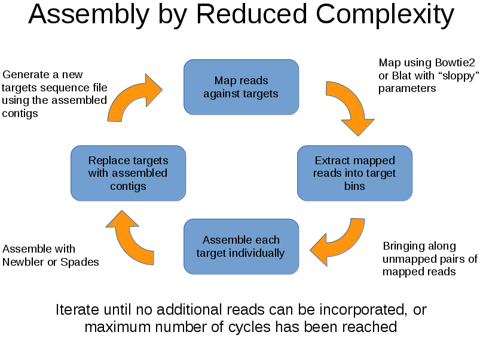

Welcome to the Assembly by Reduced Complexity application page.
ARC is a pipeline which facilitates iterative, reference guided de novo assemblies with the intent of:
- Reducing time in analysis and increasing accuracy of results by only considering those reads which should assemble together.
- Reducing/removing reference bias as compared to mapping based approaches.
Important Links
- Please post questions, success stories, and topics for discussion here:Google Group
- Bug reports and suggested features GitHub Issues
Table of Contents
ARC may be useful for:
- Assembly of mitochondrial genomes using a distantly related reference
- Assembly of exon capture data
- Assembly of bacterial plasmids
- Assembly of viral genomes
- Assembly of chloroplast genomes
- Transcriptomes (with plans for improved support in the future)
ARC design objects:
- Break large, complex problems into smaller manageable chunks.
- Reduce memory footprint requirements (many assemblies should work on a desktop/labtop PC).
- Be highly scalable, running multiple jobs simultaneously in parallel.
- Be easy to use, portable and simple to configure.
- Be extensible with support for add on scripts and post-processing features.
The algorithm:
- Map reads against a set of targets using BLAT or Bowtie2
- Extract mapped reads
- Assemble mapped reads into contigs using Roche/Newbler or Spades assemblers
- Map reads against the newly formed contigs
- Iterate until stopping conditions have been met
ARC Motivation
ARC was designed to address the following problems:
- In many experiments, de novo assembly of the full dataset is slow, resource intensive, and the end result is difficult to analyze because thousands of contigs are produced. Furthermore, it is difficult to take advantage of additional information available from previously assembled, but distantly related sequences during the assembly stage.
- Mapping based approaches also have limitations due to regions of low sequence identity where reads cannot be mapped as described by Heng Li (emphasis added):
"At present, the standard approach to variant calling is to map raw sequence reads against a reference genome and then to detect differences from the reference. It is well established and has been proved to work from a single sample to thousands of samples (1000 Genomes Project Consortium, 2010). Nonetheless, a fundamental flaw in this mapping based approach is that mapping algorithms ignore the correlation between sequence reads. They are unable to take full advantage of data and may produce inconsistent outputs which complicate variant calling. This flaw has gradually attracted the attention of various research groups who subsequently proposed several methods to alleviate the effect, including post alignment filtering (Ossowski et al., 2008), iterative mapping (Manske and Kwiatkowski, 2009), read realignment (Albers et al., 2010; Homer and Nelson, 2010; Li, 2011; Depristo et al., 2011) and local assembly (Carnevali et al., 2011). However, because these methods still rely on the initial mapping, it is difficult for them to identify and recover mismapped or unmapped reads due to high sequence divergence, long insertions, SVs, copy number changes or misassemblies of the reference genome. They have not solved the problem from the root."
Installation
Prerequisites:
A mapper and assembler must be installed in your path, the following are currently supported.-
Mapper:
- Bowtie 2
- Blat
Note that Blat currently only supports FASTA format as an input for query sequences. We have contacted the author with a patch to add FASTQ support and hope that it will be incorporated in the release version soon. Until then we supply a patch which the user must apply in order to add FASTQ support to BLAT.
- Assembler: For more information on installing these programs see the Advanced Installation Instructions on the Wiki. Any combination of the mappers and assemblers above should work equally well in most cases, however there can be differences in recruited reads, sensitivity to repeats, and assembly results, so testing different combinations may improve results.
Additional Requirements:
- Python 2.7.X
- Python module BioPython (developed with v 1.6.0, but should work with any recent release)
Download ARC:
Option 1: Using "git clone"
$ git clone git://github.com/ibest/ARC.gitOption 2: Compressed archive
Download .zip Download .tar.gzARC installation options:
ARC can be set up in a number of ways depending on your use case.Option 1: Run ARC without installing
-
ARC can be run from the "git clone" or uncompressed archive folder without installing:
Note that while it isn't necessary to pipe the output from ARC to a log file, it is recommended in case the need to troubleshoot arises.$ ./ARC/bin/ARC > log.txt
Option 2: Install as a Python module
-
ARC supports the standardized Python Distutils approach to installing modules. Run the following to install to your default Python path, and see the Distutils documentation for more advanced options:
$ python setup.py install
Option 3: Install using a Python Virtual Environment
-
Move to the directory where you keep all of your python virtual environments and run the following commands:
$ cd ~/pyenvs $ virtualenv arc $ source /path/to/ARC/bin/activate $ cd /path/to/arc/source $ python setup.py install
Patching BLAT to support FASTQ (Optional):
We have found that the BLAT mapper by Jim Kent is an excellent, fast, and efficient tool for aligning reads against a divergent reference. Unfortunately it doesn't natively support the FASTQ format which is the standard output of most HTS platforms. Ilya Zhbannikov (author of SeqyClean) wrote a patch which adds FASTQ support to BLAT. This patch is distributed in the "contrib" folder. Please ensure that you have the proper academic/nonprofit status, or acquire a license from Kent Informatics) and then use the following set of commands to download, patch, and install BLAT with FASTQ support.$ wget http://users.soe.ucsc.edu/~kent/src/blatSrc.zip
$ unzip blatSrc.zip
$ patch -p0 </path/to/ARC/contrib/blat+fastq_support.patch
$ cd blatSrc
$ export MACHTYPE=x86_64
$ mkdir ~/bin
$ mkdir ~/bin/x86_64
$ make
Testing your ARC install:
A small test dataset and configuration file is included with ARC in the "test_data" folder. This can be used to test ARC, either by running the included shell script, or by running ARC normally:$ cd test_data
$ ./runarc
$ cd test_data
$ ARC
Usage
- First, configure input files.
- Combine reads into a maximum of 3 files per sample: PE1, PE2, SE (where PE stands for Paired End, and SE for Single End). These files can be fasta or fastq formatted but must all be the same format.
- Ensure that the targets file is in fasta format and that all entries have unique names.
- Create a file named ARC_config.txt (see the files in test_data for an example). Put this file in a working directory on a drive with plenty of free space.
- Run ARC using the approach appropriate to the installation method selected.
$ ARC > log.txt
Outputs
ARC will create a set of folders corresponding to the samples included in the ARC_config.txt. These will be labeled working_* and finished_*.The working_* folders contain the following files:
- I00n_contigs.fasta - these are the intermediate contig results for each iteration mapping_log.txt - the output produced by the mapper
- *.idx files - Biopython indexes of the reads (these are kept to facilitate restarting without re-indexing the read files)
- contigs.fasta - this contains all contigs for the sample Contig names have the following format: SampleID_:TargetID:_ContigN where there can be multiple contigs for one target
- PE1.fastq, PE2.fastq, SE.fastq - these files contain the reads which were mapped on the final iteration of ARC. Reads have a slightly modified name to ensure compatibility with Newbler and contain a Sample_:_Target field in the description.
Configuring ARC
Command line options include:
| Option | Description |
|---|---|
| -d | --debug, Turn on extra debug output. |
| -p | --profile, Turn on code profiling. |
| -c | --config, Specify an alternate ARC config file (ARC_config.txt by default). |
| -v | --version, Print the version number and exit. |
| Parameter | Description |
|---|---|
| reference* | A fasta file contain one or more reference sequences. |
| numcycles | Maximum number of mapping and assembly cycles ARC will carry out Default: 1 |
| max_incorporation | Control for repeat elements. If total reads recruited in the current cycle is greater than max_incorporation X reads recruited in previous cycle, assembly will not be carried out. Default: 5 |
| bowtie2_k | Controls the max number of matches Bowtie 2 will report for each read. Default 5 |
| format* | Format for files containing reads, can be fasta or fastq. |
| mapper* | Mapper to use during read recruitment, can be bowtie2 or blat. |
| assembler* | Assembler to use during assembly stage, can be newbler or spades |
| urt | Newbler parameter “use read tips” may reduce the number of ARC iterations by instructing Newbler to extend contigs using single reads at the edges of contigs. Note that ARC will not use 'urt' on the final iteration to ensure higher quality contigs. Default False |
| verbose | Output extensive logging details about ARC operation including all calls to external programs Default False |
| assemblytimeout | Amount of time (in minutes) ARC will wait for an assembly to finish before killing the assembly process. Adjusting this value can make assemblies of large targets possible, or reduce the impact of repeats on large ARC runs. Default 10. |
| cdna | Newbler parameter that enables experimental RNAseq assembly and read incorporation reporting. Newbler will be run in transcriptome assembly mode on the final ARC iteration. Default: False |
| rip | Newbler parameter that instructs Newbler to only place reads in a single contig. In some cases Newbler will split a read placing parts of it in more than one contig. Default: False |
| subsample | Subsample read depth to a percentage of the original number of mapped reads. In cases where sequencing depth is great (>100x) it is often beneficial to only assemble a random subset of the mapped reads. For example, subsample=0.4 would cause ARC to retain 40% of mapped reads for assembly. Default: 1 |
| maskrepeats | Causes ARC to mask simple tandem repeats in contigs before mapping. This results in recruitment of fewer reads contain repeats. Default: True |
| nprocs | Number of processors ARC should use. ARC can effectively make use of at least 64 cores when processing large jobs. Default: 1 |
| fastmap | BLAT mapper parameter, runs BLAT in fastMap mode that requires high identity and doesn't allow insertions or deletions. |
| sloppymapping | Controls whether reads will be mapped in low-specificity (sloppy) mode on the first iteration. Default True. |
Tips and tricks for advanced users
Using multiple sequences for a single target:
In some cases it may be difficult to identify a single best homologous target to use in seeding an assembly. In this situation ARC can be configured to use multiple sequences as a single target by using the following naming scheme:- Name the targets sequences so that they share a common middle element in the following way:
- >ID_:Target1:_seq1
- >ID_:Target1:_seq2